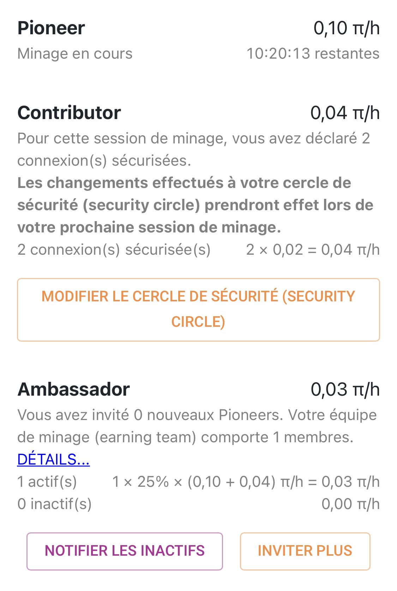

Why mine Pi ?
Nowadays, cryptocurrencies start to take an important place in the world, especially at the economic level. Now is the time to invest, but no, invest is not the word.
With Pi, you won't have to spend a single cents, you can mine cryptocurrency without spending, and so make benefits in security with your phone. Pi app is free, and you can mine faster with a referral program. The more friends you invite, faster your mining will be, and bigger your Pi wallet will be. The referral programm allow to accentuate mutual aid, sharing and allow to create a real mining team.

"Pioneer" section represents you, mining at 0.10 Pi per hour. Below, you can see how much time is left before you need to start a new mining session.
"Contributor" section represents your security circle. It gives you 0.02 Pi/h for each person in your circle.
The contributor role unlock at 3 mining sessions. To add people to your security circle, you'll need their phone number. Afterwards, you can add them easily from "Earn Pi" menu.
5 people at maximum are allowed in your security circle, and as you can see on the image, each person make you earn + 0.02Pi/h for each mining session.
"Ambassador" section includes everybody you invited thanks to their referral link or the person who invited you.
This section is your mining team, who produce 2 x 25% x (0.10 + 0.06) Pi/h. So, for example, if your mining team has 2 members, you will have a 0.08Pi/h increase.
At last, you will need that everybody be active every mining session.

For the "Pioneer" category, you can see here that the rate of Pi/h doesn't change, because it will be different depending on the numbers of Pi there is to mine. For now, it is at 10 Pi/h.
"Contributor" rank, we can see that the rate of Pi/h is lower than the previous example, because the security circle of this person is higher, the principle is to maximise the benefits.
Regarding "Ambassador", we see here the mining is lower because fewer people are in the mining team of this perrson. So, the number of Pi mined by hour is lower.
This is the usefulness of the Pi referral program.